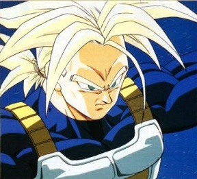

|
 Halfbreeds |
|
Description: Half-breeds are not a simple mix of just any two races. They are, more specifically, half human, and half saiyan. Half-breeds, for the most part, live on Earth. Like Saiyans, they are born with a monkey tail also, like their Saiyan parents, they have the ability to become a Super Saiyan, as well as transform into the giant monkey-beasts known as Oozaru, though the latter is only possible if their tails are still attached during a full moon. Rumor has it that half-breeds are incapable of attaining as high of a level of Super Saiyan, though this is hard to prove, since so few attain such unheard-of power. Energy Attacks: Energy Ball Masenko Kamehameha Burning Attack Renzoku Energy Dan Skills: Energy Barrier Powerups: SSJ1 SSJ2 Mystic Mystic SSJ USSJ Kaioken Oozaru |